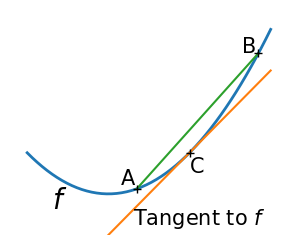
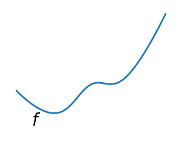

Note
Go to the end to download the full example code
2.7.4.4. Convex function¶
A figure showing the definition of a convex function
- 
- 
import numpy as np
import matplotlib.pyplot as plt
x = np.linspace(-1, 2)
plt.figure(1, figsize=(3, 2.5))
plt.clf()
# A convex function
plt.plot(x, x**2, linewidth=2)
plt.text(-0.7, -(0.6**2), "$f$", size=20)
# The tangent in one point
plt.plot(x, 2 * x - 1)
plt.plot(1, 1, "k+")
plt.text(0.3, -0.75, "Tangent to $f$", size=15)
plt.text(1, 1 - 0.5, "C", size=15)
# Convexity as barycenter
plt.plot([0.35, 1.85], [0.35**2, 1.85**2])
plt.plot([0.35, 1.85], [0.35**2, 1.85**2], "k+")
plt.text(0.35 - 0.2, 0.35**2 + 0.1, "A", size=15)
plt.text(1.85 - 0.2, 1.85**2, "B", size=15)
plt.ylim(ymin=-1)
plt.axis("off")
plt.tight_layout()
# Convexity as barycenter
plt.figure(2, figsize=(3, 2.5))
plt.clf()
plt.plot(x, x**2 + np.exp(-5 * (x - 0.5) ** 2), linewidth=2)
plt.text(-0.7, -(0.6**2), "$f$", size=20)
plt.ylim(ymin=-1)
plt.axis("off")
plt.tight_layout()
plt.show()
Total running time of the script: (0 minutes 0.045 seconds)